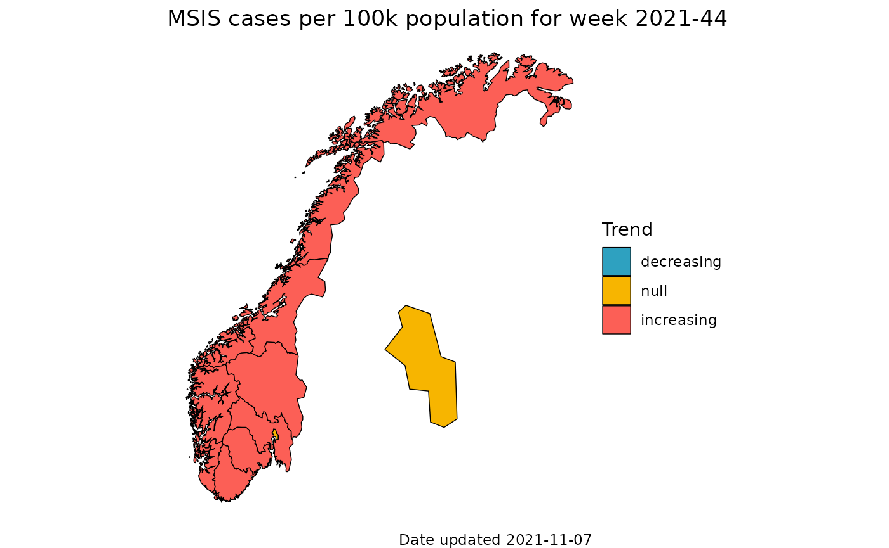
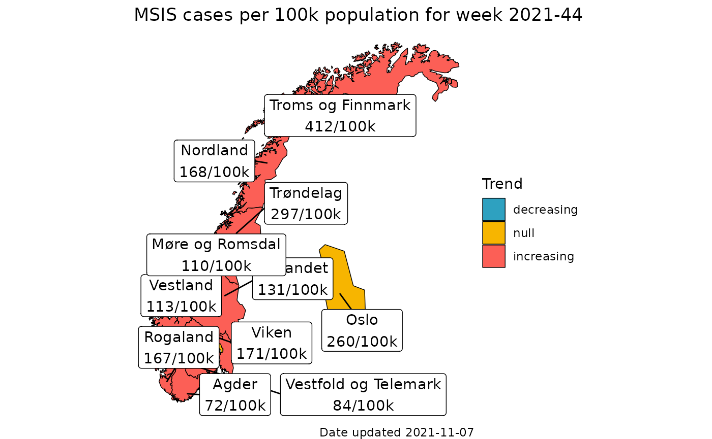

Short term trend for COVID cases Part 2 map
Chi Zhang
2022-05-30
Source:../vignettes/short_term_trend_msis_map.Rmd
short_term_trend_msis_map.RmdIn this vignette we illustrate how to compute short term trend with splalert::short_term_trend for multiple locations, and visualize in a map. We also include labels with the number of confirmed COVID cases per 100 000 population (for each county).
Covid-19 MSIS cases
The Covid-19 cases (lab confirmed) for Norway, for each county and the whole nation. The data does not distinguish age groups or sex.
This dataset is extracted on 2022-05-04. The time period is from 2020-02-21 to 2022-05-03.
The data in csv and xlsx formats can be found on our Github repository.
Data in spltidy format
We have prepared the data into spltidy format, from which we can see the summary of each column, such as data type and amount of missing data.
d_msis <- spltidy::norway_covid19_cases_by_time_location
# check the column names
# colnames(d_msis) 1. Plan analysis for all locations with plnr
First define a new plan, then add data in the following way.
# We begin by defining a new plan
p <- plnr::Plan$new()
# 1. add data
data_fn <- function(){
return(d_msis)
}
p$add_data(
name = "covid19_cases",
fn_name = "data_fn"
)
p$get_data() %>% names
#> [1] "covid19_cases" "hash"Next we add some argument sets (we call them argset). We want to repeat the same analysis for all locations available in this dataset, which are 1 nation and 11 counties. It can be done by expand_list().
# 2. add argset
# check location codes
location_codes <- p$get_data()$covid19_cases$location_code %>%
unique() %>%
print()
#> [1] "county03" "county11" "county15" "county18" "county30" "county34"
#> [7] "county38" "county42" "county46" "county50" "county54" "norge"
p$add_argset_from_list(
plnr::expand_list(
location_code = location_codes,
granularity_time = "isoweek"
)
)
# Examine the argsets that are available
p$get_argsets_as_dt()
#> name_analysis index_analysis location_code
#> 1: bcd545c2-f9ec-4daa-8179-ea6817c8b37b 1 county03
#> 2: 7241d7cb-81f3-4dfa-9ee2-d9c71f0a840d 2 county11
#> 3: 96e1d9f3-8417-4515-bcd4-b130bdc8176e 3 county15
#> 4: c1dbca14-d783-4533-96b2-dca81649bb7f 4 county18
#> 5: adf571e5-5c2c-46ff-be8f-ee293ed84e43 5 county30
#> 6: d6c0538f-db06-4d6c-9118-88c60d16f20c 6 county34
#> 7: 39552024-c722-44b8-a1ba-11faf51798fb 7 county38
#> 8: 817ee13f-6882-4834-9065-b25d5e10699a 8 county42
#> 9: a946ffa3-3eca-4d97-b336-089c40009865 9 county46
#> 10: eba80238-fdf8-4893-8343-38dc7de362ff 10 county50
#> 11: 08f066a9-07cc-44b2-8e49-89182384c7bd 11 county54
#> 12: 98d28f88-6a29-494b-837a-3b60218b3bc8 12 norge
#> granularity_time
#> 1: isoweek
#> 2: isoweek
#> 3: isoweek
#> 4: isoweek
#> 5: isoweek
#> 6: isoweek
#> 7: isoweek
#> 8: isoweek
#> 9: isoweek
#> 10: isoweek
#> 11: isoweek
#> 12: isoweekNext we create an action. This allows us to develop and interact with only one data specification (e.g. location_code == 'county03') without having to do explicit filtering.
On this specific subset, we carry out one function like in the previous example, splalert::shorterm_trend. Return the result at the end of the action function.
# 3. action
# To do this, we first need to create an action function
# (takes two arguments -- data and argset)
action_fn <- function(data, argset){
if(plnr::is_run_directly()){
data <- p$get_data()
argset <- p$get_argset(1) # county03, isoweek
}
# develop function for ONE argset only
# data
pd <- data$covid19_cases[
location_code == argset$location_code &
granularity_time == argset$granularity_time
]
# function
trend_msis <- splalert::short_term_trend(
pd,
numerator = "covid19_cases_testdate_n",
trend_isoweeks = 6,
remove_last_isoweeks = 1
)
# return
trend_msis
}Now we apply the action function on all 12 data specifications.
# apply this to all 12 argsets
p$apply_action_fn_to_all_argsets(fn_name = "action_fn")2. Run analysis for all 12 argsets
You can run the analysis one by one, or run all 12 together.
# run one by one
# p$run_one(1)
# p$run_one(2)
# run together
res <- p$run_all_progress()The results are saved in a list of length 12. You can access them in the same way you access list.
res_county03 <- res[[1]]
print(res_county03[, .(location_code, date, covid19_cases_testdate_n, covid19_cases_testdate_trend0_42_status)])
#> [unified] [unified] [context]
#> <character> <Date> <integer>
#> NA=0 % NA=0 % NA=5 %
#> location_code date covid19_cases_testdate_n
#> 1: county03 2020-02-23 0
#> 2: county03 2020-03-01 7
#> 3: county03 2020-03-08 39
#> 4: county03 2020-03-15 276
#> 5: county03 2020-03-22 366
#> ............................................................
#> 118: county03 2022-05-22 NA
#> 119: county03 2022-05-29 NA
#> 120: county03 2022-06-05 NA
#> 121: county03 2022-06-12 NA
#> 122: county03 2022-06-19 NA
#>
#> [context]
#> <factor>
#> NA=0 %
#> covid19_cases_testdate_trend0_42_status
#> 1: training
#> 2: training
#> 3: training
#> 4: training
#> 5: training
#> ..............................................
#> 118: forecast
#> 119: forecast
#> 120: forecast
#> 121: forecast
#> 122: forecastWe can collect the results from each list into one data table.
res_unlisted <- rbindlist(res)3. visualize in a map
# select data for one week (narrow data)
this_isoyearweek <- '2021-44'
d_msis_this_isoyearweek <- res_unlisted[granularity_geo == 'county' &
isoyearweek == this_isoyearweek,
.(location_code,
date,
isoyearweek,
covid19_cases_testdate_pr100000,
covid19_cases_testdate_trend0_42_status)]
d_msis_this_isoyearweek[, trend := factor(
covid19_cases_testdate_trend0_42_status,
levels = c('decreasing','null', 'increasing')
)]Now we make a map
pd <- copy(splmaps::nor_nuts3_map_b2020_insert_oslo_dt)
# join the map data.table
pd[d_msis_this_isoyearweek,on="location_code",trend:=trend]
# plot map
q <- ggplot()
q <- q + geom_polygon(
data = pd,
mapping = aes(x = long, y = lat, group = group,fill=trend),
color="black",
size=0.25
)
q <- q + coord_quickmap()
q <- q + theme_void()
q <- q + labs(title=glue::glue("MSIS cases per 100k population for week ", this_isoyearweek))
q <- q + splstyle::scale_fill_fhi("Trend",palette = "warning", direction = 1, drop=F)
# include date
date_update <- as.character(unique(d_msis_this_isoyearweek$date))
q <- q + labs(caption = glue::glue("Date updated ", date_update))
# add watermark later!
q
Add label
# now we add label to the map
# which contains county name + case per 100k
labels <- copy(splmaps::nor_nuts3_position_geolabels_b2020_insert_oslo_dt)
labels[
d_msis_this_isoyearweek,
on = "location_code",
cases_100k := covid19_cases_testdate_pr100000
]
labels[
spldata::nor_locations_names(),
on = "location_code",
location_name := location_name
]
# format case, remove decimal
labels[, cases_100k := splstyle::format_nor_num_0(cases_100k)]
labels
#> location_code long lat cases_100k location_name
#> 1: county30 8.85000 60.60000 171 Viken
#> 2: county03 20.85000 62.00000 260 Oslo
#> 3: county34 11.00000 61.86886 131 Innlandet
#> 4: county38 8.50000 59.32481 84 Vestfold og Telemark
#> 5: county42 7.80000 58.30000 72 Agder
#> 6: county11 6.10000 58.70000 167 Rogaland
#> 7: county46 6.50000 61.45000 113 Vestland
#> 8: county15 7.80000 62.50000 110 Møre og Romsdal
#> 9: county18 14.80000 66.75000 168 Nordland
#> 10: county54 22.94275 69.50000 412 Troms og Finnmark
#> 11: county50 12.00000 64.15000 297 Trøndelag
# put case 100k together with county name
labels[, label := paste0(location_name, '\n', cases_100k, '/100k')]
q <- q + ggrepel::geom_label_repel(
data = labels,
mapping = aes(x = long, y = lat, label = label)
)
q